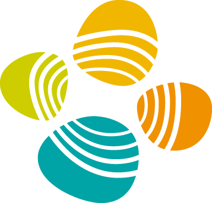

Zhongyu Yang
About Me
Hi! I’m Zhongyu Yang, a final year undergraduate student at Lanzhou University, majoring in Mathematics (the Basic Theory Class). Currently, I am working as a Remote Intern at KAUST Vision-CAIR.
Research Interests
- Topics : Multimodal Large Language Models; Diffusion-based Image Generation; Retrieval-Augmented Reasoning
- Objective : My long-term goal is to build general-purpose multimodal systems that can perceive, reason, and communicate effectively across visual, textual, and behavioral modalities in dynamic, real-world environments.
Looking for a PhD position now.
News
- [2025.03] We present WikiAutoGen for automated multimodal Wikipedia-style article generation. Featured in Hugging Face Daily Papers and reposted by AK.
- [2024.12] Started Remote Research Internship with Jun Chen and Mohamed Elhoseiny (KAUST), focusing on web-scale RAG systems for vision.
- [2024.11] Released ReChar: structure-preserving and user-aesthetic-enhanced character generation.
- [2024.05] Our paper Green Effect of Energy Transition Policy is accepted to Finance Research Letters (TOP Q1). Collaboration with Zhichao Yu.
- [2024.04] National Innovation Project funded: FPGA-Based AI Doctor, advised by Prof. Xinhua Wang.
- [2024.04] Joined CUHKSZ as Research Assistant with Ruimao Zhang, focusing on AI4Science and CV.
- [2024.03] Began Remote Research Internship with Yingfang Yuan at Heriot-Watt University on AIGC.
- [2024.01] Project UNet-Centric MambaMorph selected as Outstanding Undergraduate Project (TOP 0.1%) under Barley Plan, advised by Prof. Wenting Zhang.
- [2023.05] Paper Environmental Quality in OECD Countries accepted by Renewable Energy (SCI Q1). Collaboration with Mengying Su.
- [2023.03] As sophomore, led innovation project on Tropical Linear Representation of Chinese Monoids, advised by Prof. Wenting Zhang. [Tech Report]
Experience
-
 Research Intern, Taiwan, Nvidia
Jun 2025 - Sep 2025
Research Intern, Taiwan, Nvidia
Jun 2025 - Sep 2025
- Research Scientist Intern, XR Core AI, Meta May 2024 - Nov 2024
-  Visiting Research Student at Mohamed Elhoseiny's Group, KAUST Dec 2021 - Mar 2022
- Research Assistant at Yongfeng Huang's Group, Tsinghua University Dec 2020 - Mar 2021
Publications [ Google Scholar]
-
Renewable EnergyRenewable Energy (SCI Q1 TOP, IF = 9.0)
-
FRLFinance Research Letters (SSCI Q1 TOP, 1/111, IF = 10.4)
-
 HF Daily
Hugging Face Daily Papers
HF Daily
Hugging Face Daily Papers
-
 Under Review
Under Review
-
 Tech Report
Tech Report
-
 Under Review
Under Review
-
Under ReviewEmoRes: Toward User-Agnostic Psychological Support via Topic-Mining Emotional AgentUnder Review
-
Under ReviewMERMAID: Multi-perspective Self-reflective Agents with Generative Augmentation for Emotion RecognitionUnder Review
All
GenAI
MLLM
Economy
Math
Services
Conference Reviewers
- CVPR, ECCV, AAAI, ICLR, ICCV
- SIGGRAPH Asia, NeurIPSW
Journal Reviewers
- IJCV, CVIU